Loading
Light Performance Results
As light enters and exits a diamond, the rare allure of the unique gemstone is revealed. Light performance is the combined grading of the four light qualities that define the diamond's individual beauty: Brilliance, Sparkle, Fire and Symmetry.
Brilliance
The diamond's luster is determined by two components: brightness and contrast. Brightness refers to the intensity of light that radiates from the stone, and contrast is a result of alternating dark and light facets, which create an optical sensation of increased brilliance.
Fire
When light enters and exits the dense structure of the diamond, it refracts, or bends. This refraction radiates vivid flares of rainbow colors that are commonly described as the diamond's 'fire'. Diamonds with intense fire are appreciated for their fascinating play of color and beauty at different angles.
Sparkle
As a diamond moves, the play of light inside the stone creates dramatic, luminous flashes that are ever changing in their beauty. The diamond's sparkle reflects the quality of the cut, a direct result of the skill and craftsmanship of the professional diamond cutter.
Symmetry
During the diamond's formation process, the stone may develop inclusions or blemishes. A well-cut diamond features optimal symmetry and proportions, in order to maximize light distribution and minimize the visual impact of the stone's natural defects.
Sarine Loupe™ Imaging
The Sarine Loupe knits together thousands of individual images to present a precise, instant picture of the actual diamond, viewable in 3D magnified form. The intuitive imaging function allows you to explore the diamond in virtual detail from every possible aspect, for a superb viewing experience.
Hearts
A distinctive circular hearts pattern is apparent from the top view of the diamond’s crown. Created by the play of light as it enters and exits the diamond, the hearts pattern indicates superior optical symmetry and a higher cut grade.
Arrows
A distinctive circular arrows pattern is apparent from the bottom view of the diamond’s pavilion. Created by the play of light as it enters and exits the diamond, the arrows pattern indicates superior optical symmetry and a higher cut grade.
Cut and Symmetry Grading
Cut grade is determined by the quality and beauty of the diamond's craftsmanship. In the hands of the professional cutter, the rough stone is transformed into a polished diamond featuring optimal proportion, symmetry and light refraction. The cut is the diamond's unique signature, reflecting its individual character and properties.
Color
Color is the measure of a diamond’s natural hue. The grading spectrum ranges from colorless to yellow. Colorless diamonds are rare, and are prized for their natural beauty and value.
Clarity
Clarity is the measure of a diamond’s inclusions (defects), which occur naturally inside the stone or on the stone's surface. Flawless diamonds are considered the most desirable for their rare perfection.
Cut
Cut is the measure of a diamond’s beauty and craftsmanship. A diamond's cut grade is determined by its geometrical proportions and symmetry, which affect the play of light reflected in the diamond.
Carat
Carat is the measure of a diamond’s mass or weight. For the past century, the carat unit has been set at a standard 200 milligrams. Diamonds are often measured in increments of 1/4 carat.